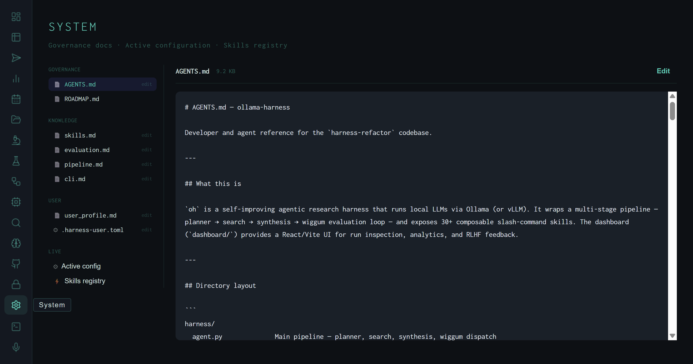
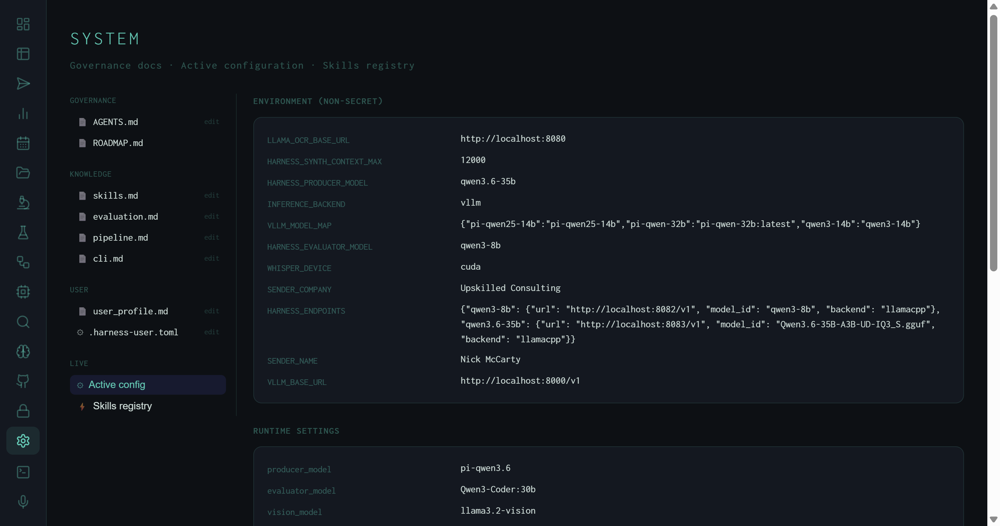
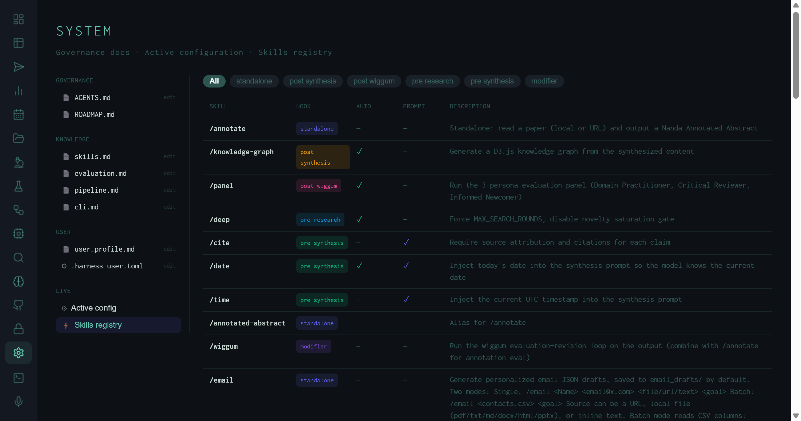

The System View: Governance Docs, Active Configuration, and 38 Skills
A single panel that surfaces every file the harness reads as behavioral input — from AGENTS.md to .harness-user.toml — plus a live snapshot of the active runtime configuration and a filterable registry of all 38 installed skills.
The harness is configured by a combination of environment variables, TOML settings, and Markdown governance documents that the planner and synthesizer read at runtime. Editing any of these traditionally meant opening a terminal, finding the file, editing it, and restarting the server. The System view collapses that into a file browser with an inline edit mode — three groups of files in a sidebar, a content pane that renders the selected file, and two live panels that reflect the current running state without requiring a restart to read.

System view with AGENTS.md selected. The sidebar shows all three file groups plus the two LIVE virtual entries at the bottom. The Edit button appears for all files flagged as editable.
The File Sidebar
The sidebar has three static groups and one live section:
AGENTS.md (9.2 KB, editable) is the developer and agent reference for the codebase — directory layout, skill quick-reference table, Wiggum dimension weights, environment variables. The harness reads this file via /introspect and /orientation skills. ROADMAP.md (62 KB) is read-only — the long-form project roadmap, too large to edit in the dashboard.
/introspect and /contextualize: skills.md (full skill catalog), evaluation.md (Wiggum dimensions and rubric anchors), pipeline.md (stage descriptions, env vars, run record fields), cli.md (CLI commands, flags, API endpoints). All four are editable in the dashboard — changes take effect on the next run that calls /introspect.
user_profile.md contains the operator's background and preferences — injected into synthesis context for personalization. .harness-user.toml holds user-specific config overrides (sender name, company, hourly rate for leverage calculations). Both are editable inline.
Files marked with a small "edit" label in the sidebar open in read mode by default. Click Edit to switch the content pane to a textarea; Save writes the file via PUT /api/system/file/{key} and clears the edit state. Files larger than 80 KB are truncated with an amber warning — the file is still readable, just not fully shown.
Active Config
The Active config pane is a live snapshot of the process environment and resolved settings at the moment you open it. It has three sections.

Active config: environment variables in the top section, runtime settings in the middle. The HARNESS_ENDPOINTS JSON shows the two inference backends currently registered — qwen3-8b at port 8082 and qwen3.6-35b at port 8083, both via llama.cpp.
Environment (non-secret) shows every env var the harness exposes that doesn't contain credentials. The current values:
vllm — routes inference through the vLLM-compatible API path (llama.cpp server in this case)qwen3.6-35b — default synthesis modelqwen3-8b — default Wiggum evaluation model12000 tokens — context window ceiling passed to the synthesizer; the Context Window treemap in the Runs view uses this as the denominator for fill %qwen3-8b → localhost:8082 (llama.cpp), qwen3.6-35b → localhost:8083 (llama.cpp, Q3_S GGUF)cuda — Whisper transcription runs on GPU via the Voice pipelinehttp://localhost:8000/v1 — fallback vLLM endpoint when HARNESS_ENDPOINTS has no match for the requested modelRuntime settings shows the resolved config object after all overrides are applied:
pi-qwen3.6 — the resolved model tag, after any alias substitutionQwen3-Coder:30bllama3.2-visionnomic-embed-text — used by ChromaDB for memory embeddings8.0 — Wiggum score required to halt the evaluation loop and mark the run PASS3 — maximum revision attempts before the run is marked FAIL regardless of score4 — thread pool size for parallel sub-task execution in orchestrated runstrue — SQLite cache for search results; identical queries skip the network round-tripfalse — 3-persona evaluation panel disabled (enable with WIGGUM_PANEL=1 or /panel skill)The third section, Synthesis instructions, renders the active SYNTH_INSTRUCTION variants — one block per task type. This is the instruction the synthesizer reads verbatim when composing the output document, and it's what the autoresearch loop mutates during experiments.
The synthesis instructions shown here are the winner from autoresearch experiment #14 — the single KEEP out of 40 experiments, scoring 8.530. Seeing it in the Active config pane confirms the harness is actually running the optimized instruction, not an earlier draft.
Skills Registry
The Skills registry lists all 38 installed skills with five columns: SKILL (name with leading slash), HOOK (colored chip), AUTO (whether the skill fires without explicit invocation), PROMPT (whether it injects text into the synthesis prompt), and DESCRIPTION.

Skills registry filtered to all hooks. Colored chips show hook type; AUTO ✓ means the skill triggers automatically from matching task language; PROMPT ✓ means it adds text to the synthesis prompt directly.
Hook taxonomy
Skills are organized by where in the pipeline they attach:
/lit-review, /playwright, /deck, /email, /github, /recall, /debug, /forge:plugin. Most of the skill catalog lives here.
/cite requires source attribution; /date and /time inject the current date/timestamp so the model knows when it is; /scratchpad runs Python for exact calculations; /beige-book prepends Federal Reserve Beige Book text for economic tasks.
/deep forces MAX_SEARCH_ROUNDS and disables the novelty saturation gate that would otherwise end search early. /contextualize injects self-knowledge (skills, pipeline, eval rubric) into the planning prompt so the model can reason about its own capabilities.
/knowledge-graph — generates a D3.js force-directed graph from the synthesized content. Fires automatically (AUTO ✓) when the task string contains "kg" or "visualize".
/panel — runs the 3-persona evaluation panel (Domain Practitioner, Critical Reviewer, Informed Newcomer) after Wiggum scores the output. Fires automatically (AUTO ✓) on high-complexity tasks when WIGGUM_PANEL=1.
/wiggum — forces the evaluation/revision loop on any output, including standalone skill outputs that don't go through it by default. Useful for scoring /annotate results against the research rubric.
AUTO and PROMPT flags
The AUTO column indicates which skills fire without the user writing the slash command explicitly. The trigger is a keyword match in the task string: /deep fires on tasks containing "comprehensive" or "exhaustive"; /contextualize fires on self-referential tasks. This is what makes skills composable — a task like "exhaustively research RAG architectures and save to ~/Desktop/out.md" will automatically engage /deep without any explicit flag, because the planner recognizes "exhaustively" as the auto-trigger.
The PROMPT column marks skills that inject text directly into the synthesis prompt rather than running separate pipeline steps. /cite and /date are the main examples — they add a few lines to the synthesis instruction that the LLM reads alongside the research context, at near-zero token cost.
The hook filter chips at the top of the skills table let you isolate a specific tier of the pipeline at a glance. Selecting "pre synthesis" shows just the five skills that modify what the LLM sees right before it writes — which is the tier that has the highest leverage on output quality per added token.
In-dashboard editing
Edits to evaluation.md or skills.md take effect on the next skill invocation without restarting the server — the wiki files are read from disk on each /introspect call.
AGENTS.md as agent context
AGENTS.md is written for the harness pipeline agents, not for Claude Code. When /orientation or /introspect fires, it loads this file as the agent's self-knowledge base — directory layout, skill table, env vars, and all.
Config vs. env
Runtime settings like pass_threshold and wiggum_max_rounds can be overridden by env vars at startup. The Active config pane shows the resolved values after all overrides — it's the authoritative view of what the running process actually sees.
38 skills, 6 hooks
The registry count grows as plugins are installed via /forge:plugin. New plugins drop into harness/plugins/ and auto-register on the next server start — they appear in the Skills registry immediately.
The System view is the operational dashboard for the parts of the harness that don't change run-to-run — the governance layer, the inference config, and the skill set. The Runs view covers what happened; the System view covers what the harness is.